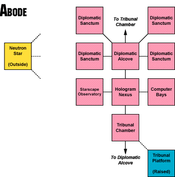
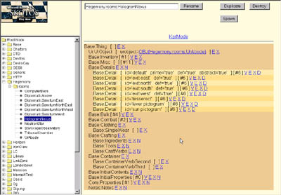
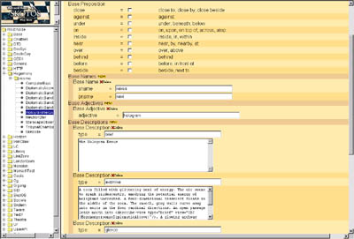

Building Blocks Examples: The Hologram NexusFebruary 21, 2002 - On and off for the last four months I've been writing a group of articles that I call Building Blocks. They describe integral and distinct elements that are required to create online games. To date, I've written seven of them. They're all handily linked in the graphic to the right: zones, maps, rooms, data inheritance, details, names, and portables. Together those first seven Building Blocks can be put together to create a whole category of online game objects: static nonvolitionals. Which is to say online game objects which aren't alive and don't do much. They just are. This week I want to do something slightly different by looking at that first category of Building Blocks and showing how the abstract concepts that I've suggested in past articles can be made very concrete in a live development system. That's right, I'm going to build something. Not surprisingly the example I'll be using will be created entirely using the Skotos StoryBuilder Toolkit. An Overview of AbodeMost conveniently for the purposes of this article, I'm right in the middle of building an online game environment. It's for our upcoming game, Galactic Emperor: Hegemony, which should be released in 2-3 weeks' time. Hegemony is actually a strategy game, already tried and successful on the Internet. However, in bringing it to the Skotos site we wanted to integrate it into our community, and to provide more opportunity for roleplaying. Thus, the strategy game is acquiring a Chat Theatre add-on, a place to talk and arbitrate problems, live. The Chat Theatre is called Abode. It's a high-tech science-fiction space station that just happens to be located down in the core of a neutron star. Thinking about ZonesThe top Building Block in my chart is zones. In other words: deciding how you're going to divide up your game, as is required by the demands of multiple designers or for the purpose of efficient resource allocation. As it happens, I intend Abode to be really small. After all, it's just an add-on to an already successful strategy game, so it doesn't need to hold the attention of players in and of itself. My first guess put Abode at a dozen or less rooms, clearly not enough to split into zones. For more information see: Trials, Triumphs & Trivialities #54, Building Blocks: Zones. Drawing a MapSome people like to draw a physical map next, detailing what their online environment really looks like, turning it into a logical map only afterward. Due to my lack of artistic skills, I tend to take the opposite tact. I go straight to the logical map. The only problem with this strategy is, if you're not careful, you can build out a logical map that doesn't make sense. The similarity in size of all the little logical blocks can be dangerous, if your rooms should actually be very different sizes and you don't take that into account when linking them together. I made sure I stayed aware of this issue, and started with s logical map anyway. I was pretty careful, and it's hard to mess up a locale this small anyway. I wanted Abode to include three main places, for reasons that I'll talk more about in a few weeks, when I get into the designs of both Galactic Emperor: Hegemony and Abode. The three locales were:
I thought this all through a bit, used my handy Roget's Thesaurus to come up with a few more futuristic sounding names, and then used Adobe Illustrator to crank out a simple logical map. This is the space station of Abode:  There's not a lot to be said about the map, other than the fact that I tried to follow my rules from my maps article, keeping it simple, and keeping travel between rooms obvious. There are only two anomalous rooms:
And that's my map. For more information see: Trials, Triumphs & Trivialities #53, Building Blocks: Maps. Outlining InheritanceIn my Building Blocks diagram, data inheritance is actually located below both rooms and portables. It's something that you need to think about, individually, for each object that you create. However, when you're using data inheritance you're also creating big trees of objects, and in order to do so correctly you need to be consistent in those inheritance trees ... otherwise everything ends up a mess. Thus, it's often best to at least sketch out your data inheritance tree before you create a single object. That's what I did for the rooms in Abode. In general the larger your locale, the more useful it becomes to use data inheritance for the rooms. It's not until you have two zones that having separate parent objects for each zone makes sense; it's not until you have two kitchens that it makes sense to inherit from a standard kitchen object. Abode was small, but still I'd clearly want a master Abode room which had common details like floors and ceilings. I also found two other opportunities to use inheritance:
Using my categories from last week, I'd classify some typical rooms in Abode as follows:
A lot simpler than some of my examples in my data inheritance article, but enough to save me some time in this particular design. For more information see: Trials, Triumphs & Trivialities #60, Building Blocks: Data Inheritance. Using the StoryBuilder ToolkitSo, you've now got your overview of your game area done. How do you actually build it? The simple answer is, "one room at a time." As you might have guessed from the title of this week's article, I've decided to use the Hologram Nexus within Abode to continue my example of room building. At Skotos all development work is done through a web-based interface called The Tree of Woe (or, on a good day, the Skotos StoryBuilder Toolkit). The picture at right shows the Tree. On the left of the display there's a list of objects. You won't be able to read it, even if you squint hard enough to send your optometrist into convulsions, but I've got a folder called Hegemony open, and it contains an object for each of the rooms in Abode, and for each of my parent objects. To the right of the display is a viewing and editing screen. It might contain an overview of your whole object — as my screen at the right does — or an overview of a part of the object or an editing screen which allows you to change variables in the object — from how much it weighs to what its description looks like. I've got a screen shot of an editing page below. Once you're using the Tree of Woe you can start putting in all of the information that I list in the rest of my Building Blocks: room descriptions, details and names. Describing a RoomDescending down my list of Building Blocks we're finally to the room. When I originally talked about rooms I was really only concerned with how to describe them — the brief, glance, look, and examine descriptions. In general, you'll find that it's easier to describe imaginary rooms than real ones. They tend to be less cluttered, and thus there isn't as much work figuring out what things to describe and what things not to. Thus, sketching out my Hologram Nexus was pretty easy. The main purpose of the Hologram Nexus, was to create a place where people entered the game that connected up to pretty much everything. Thus I needed four exits. Like all rooms, it would also have a floor, wall, and ceiling. Finally, I wanted something outre in the room, and eventually settled on a floating tesseract, which also allowed me to put forth the idea of a multiverse (i.e., multiple strategy games running simultaneously). With all that in hand I could write some descriptions for my room:
The Skotos StoryBuilder Toolkit has convenient data entry boxes, so it's really easy to input these various descriptions, then click a "Submit" button. Then I can view the prime detail of my room (which is to say, the overall description), in a handy little web form. As you'll see, it just repeats the information I listed above. I'll be including some more of these "View" forms through the rest of this article: Note that this detail, and for that matter all details built using the Skotos StoryBuilder Toolkit, contains a number of extra variables. I talked about these a little bit in my portables article. Every object and every detail of every object has certain additional variables that are used to further define behavior. Here's what the weird stuff in my above listing happens to do at Skotos:
Some of those variables would be a lot more relevant for anything but a prime detail. You'd set prepositions for the tesseract, for example, which you could be "near". The four exit details would, clearly, each be an exit. But, overall, this type of stuff is going to vary tremendously from one development system to another, so it's a bit beyond the scope of this week's example. You'll also have probably noted that my names for the prime detail are embedded in this information — a single noun and adjective. We'll get back to those, in a bit. For more information see: Trials, Triumphs & Trivialities #48, Building Blocks: Rooms. Returning to InheritanceContinuing to walk down my Building Blocks chart brings us back to data inheritance. Most of the time this step will be pretty easy — you just link in the parent room that you've decided upon. However, since the Hologram Nexus is my first room, I need to take a little extra care and actually build my parent room, figuring out what it contains. The main purpose of a parent room is to make sure that standard, repetitive details actually make it into every room. After some thought I decided each room should include walls, floor, and ceiling. They're fairly standard throughout the station, and I can overload the descriptions in children objects that should really be different — for example to create really tall ceilings in the tribunal rooms. Here's part of the standard view that the Tree of Woe shows for my master Abode room object: I won't bore you with all the descriptions of these individual details. You can see that my floor detail has an additional variable associated with it — luminosity — and that I also have decided to create a prime detail in my parent object. The prime detail is going to get mostly overloaded by each child, but I wanted to inherit a standard name down to the children , which I'll explain a bit later. For more information you can still see: Trials, Triumphs & Trivialities #60, Building Blocks: Data Inheritance. Building the DetailsNow that you know which details you'll be inheriting, you can determine the rest of your details in your room. As I mentioned in my details article you do this by building a tree — first listing all the details noted in your prime detail, then all the details noted in those details, ad infinitum. Here are the details mentioned in my prime detail:
The walls are already taken care of, but the other four must all be built anew. This works just like creating the descriptions for the room itself. Here's what I ended up with for one of the exits — the north one: Again, lots of variables. You'll note I actually filled in the exit this time. I included a bunch of names too, which I'll talk about shortly. You also might have noted some strange code including phrases like <describe-view>. This is called Skotos Active Markup, or SAM. It allows a StoryBuilder to put dynamic content in an otherwise static object — like a room. In these cases, I just linked in to some descriptions of the room on the other side of the northern passage. As I write my details I should find yet more details, creating the tree which I'd earlier described. In this case I learned that the pneumatic doors to the west and east each include a pictogram, describing its utility. Here's what my final list of details looked like for the Hologram Nexus: The UrObject at the top is the name used in the Skotos StoryBuilder Toolkit for a parent object. The UrAbode that's linked in is the room you've already seen, which includes my floor, ceiling, and walls details. By accessing each of these details in the Tree of Woe I could call up all of their descriptions and other information, but once more I won't bore you with this in-depth information. For more information see: Trials, Triumphs & Trivialities #50, Building Blocks: Details. Writing True NamesWe're really already done at this point, because I've been inputting names as I went. However, it's worthwhile to take a moment to look back at those naming decisions. You'll have two main naming concerns when working on a room: naming the prime detail and naming the rest of the details. When naming the prime detail your main concern is consistency. You want to make sure that if players examine unimportant details of a room (i.e., details you haven't created) that they'll see the main room instead. Also, you want to make sure that the players see something if they try and examine the entire room, by its name. My standard names for the Hologram Nexus were pretty easy: an adjective of "Hologram" and a noun of "Nexus". I'm thinking of also adding the adjective "glittering" and the noun "energy" to the name list for the Hologram Nexus, since I don't have a detail for that individual element. You might recall that I also created a prime detail for my parent Abode room, and said that it was for purpose of naming. That prime detail is going to get overloaded by any child room, but I can put names in it which will inherit staill down ... which is what I did. The main Abode room contains the adjective of "Abode" and the noun of "room", so that a player can always "examine room" and get the right thing. Naming a sub-detail takes a little more work because you're not just working to create consistency. You're also writing in the names which people will use to actually look at the object. To do this right, you need to look at every other description that might refer to your detail, and include both the adjectives and nouns on the list. And you need to think about alternatives too. And categories. The names I used for my northern passage were pretty simple, but included a few alternatives. Nouns were passage (the default), passageway (an alternative), and exit (a category name which I want in all of my exits). The adjectives were: north (the default), northern (an alternative) and open (another description). Sometimes you'll have wildly different descriptions which all actually refer to the same detail. For example my floor, which appears up in the parent room, shimmers and glitters with strange light from the interior of the neutron star. Thus possible descriptions included: "soft floor", "dim reflections", and "chaotic patterns". In this case I just had to step through each noun, then include all the related adjectives. Here's what the name list for my floor looks like: As with everything else, naming is done one room at a time and one detail at a time. For more information see: Trials, Triumphs & Trivialities #51, Building Blocks: Names. Rooms vs. PortablesAnd that is the Building Blocks of rooms in a nutshell. Clearly, there's a lot more work required, as I build out all of Abode, but from here it's a step-by-step, room-by-room, block-by-block process. There's one Building Block that I didn't talk about today: portables. In essence, creating a portable would work much as creating my room did, so it's not worth a separate example here. I suspect I'll offer an example of a portable object sometime down the road when I get to dynamic objects. Onward to the FutureTomorrow, in In the Trenches #4, Laurel Stuart offers her own 12-step StoryBuilding program. Go check it out as soon as it becomes available. As for myself, I do have more Building Blocks to write about. I want to hit the general categories of volitionals and dynamic objects ... but some of these object types are in a little bit of flux at Skotos right now, so I'm going to take a bit of a break before getting to them. For the next few weeks I plan to look at the Galactic Emperor games — Succession, which we just took down, and Hegemony, which'll be coming up soon. They each offer a great study of what you need to think about when creating a game.
|
||||||||||||||||||||||||||||||||||||||||||||||||||||||||||||||||||||||